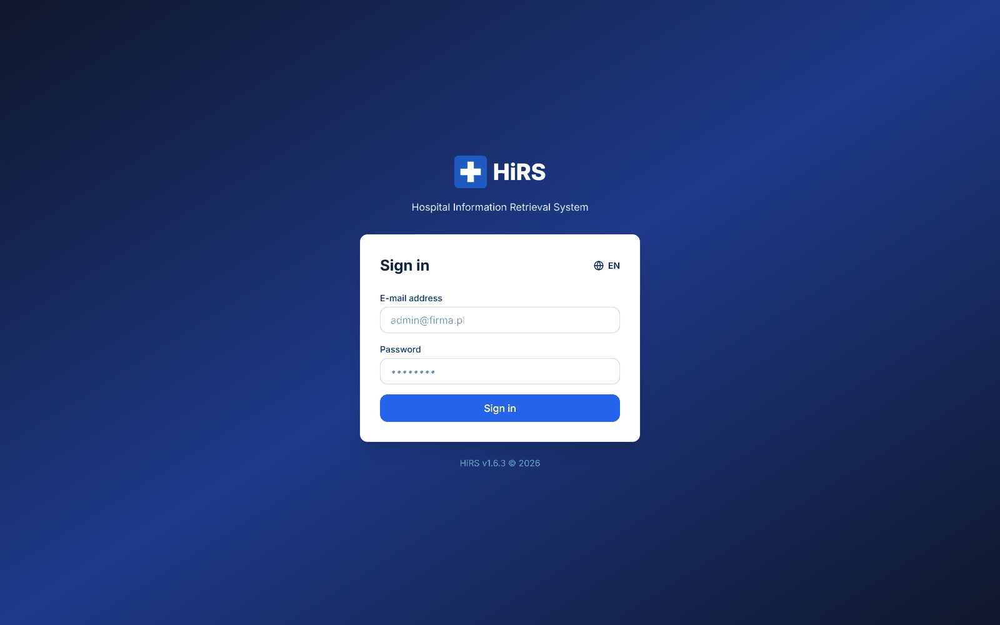
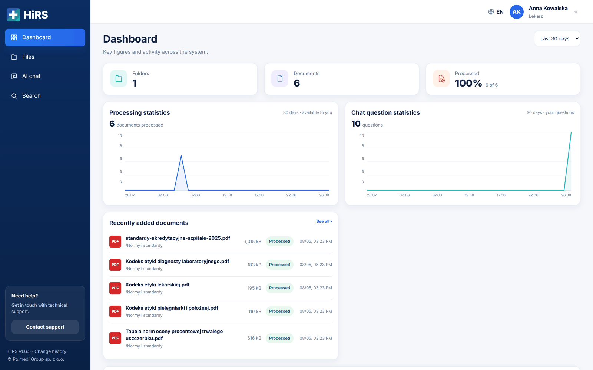
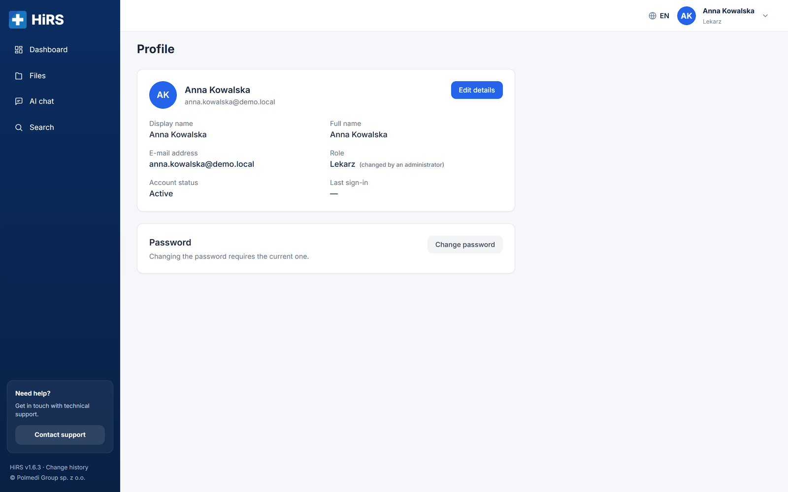
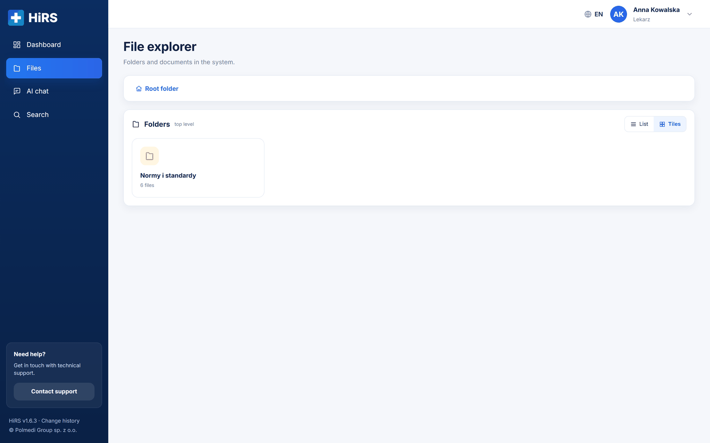
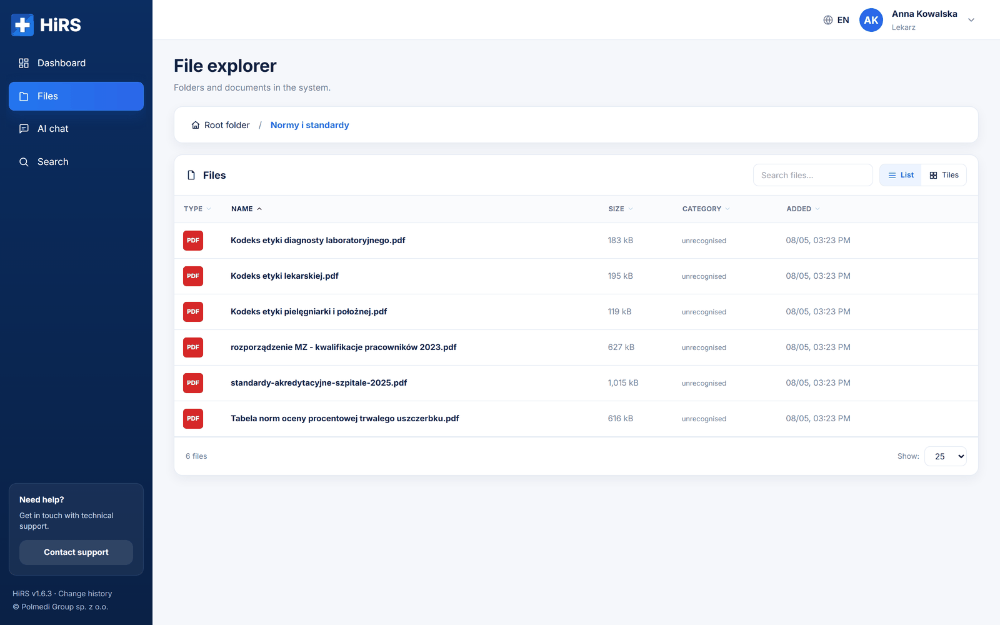
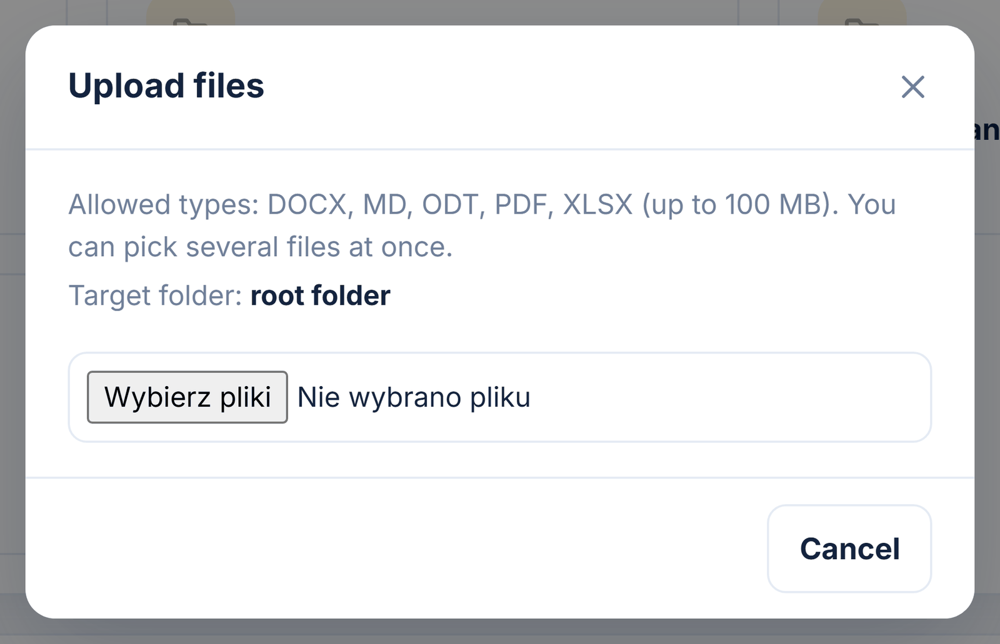
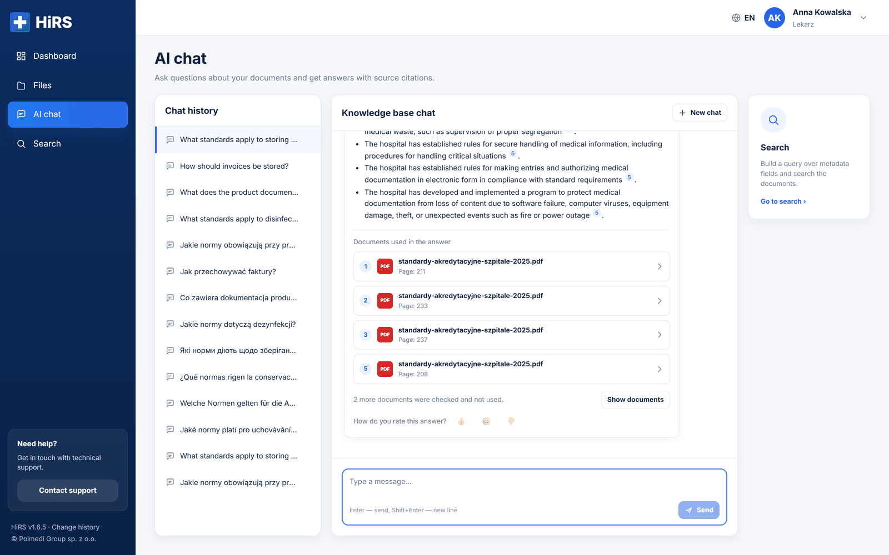
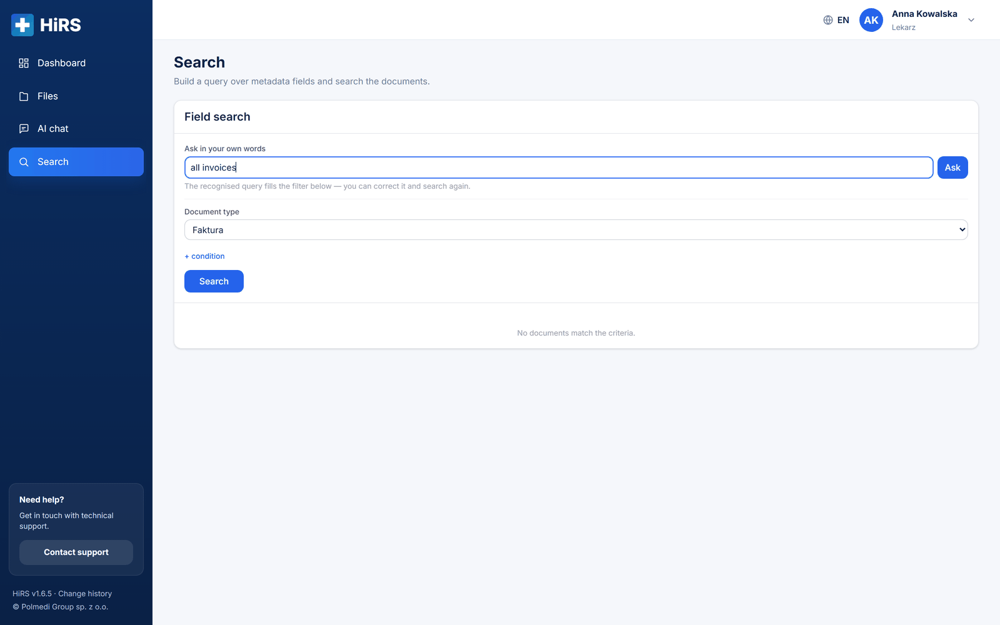
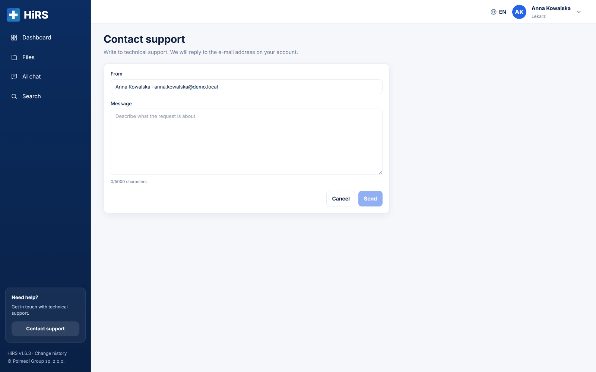

Hospital Information Retrieval System (HiRS for short) is an internal document repository. The application does two things at once: it keeps documents in an orderly folder structure and lets you ask questions about their content in plain language, the way you would ask a colleague who knows those documents.
The difference from an ordinary network drive is fundamental. On a drive you have to know which file to look in. Here it is enough to ask “what are the rules on remote work?” and the application finds the relevant passages itself, composes an answer from them and shows which document every sentence came from.
The application answers two different kinds of question and has a separate screen for each. AI chat answers questions about content — “from what age of a child is the subsidy available?”. Search answers questions about structure — “show all orders from 2023”. The split is deliberate: thanks to it you never have to guess which box your question belongs in.
Every document goes through automatic processing. The application reads its content (tables included), splits it into passages, recognises the kind of document — an order, a procedure, an application form — and extracts descriptive fields from it, for example a number, a date or the approving person. Only then does the document become visible to search and to chat.
Processing one document usually takes from a dozen seconds to a few minutes, depending on its length and on whether it is a text file or a scan that needs character recognition. During that time the document has the status Queued or Processing.
The whole application, language model included, runs on a server belonging to the hospital. Neither the content of the documents nor the questions asked ever leave that server, and nothing is sent to any external service. Access to documents follows from the permissions granted to the role an account belongs to — a user sees only the folders shared with them.
You open the application in a web browser at the address given by your administrator. Above the form is the instance mark — an icon and a name. You sign in with your e-mail address and the password received from the administrator; capitalisation in the address does not matter.

After signing in the screen splits in two. On the left is the navy menu, on the right the content of the selected page. In the top right corner you can see your name and a circle with your initials, which opens the user menu. At the bottom of the side menu is the application version number — a link to the change history — together with information about the maker.
Clicking the instance mark at the top of the menu collapses it to icons only, leaving more room for content. Clicking again expands it. The choice is remembered between sessions, so a menu collapsed once stays collapsed after the next sign-in too.
If someone else sees an extra section in the menu under the ADMINISTRATION rule, it means they have an administrator account. An ordinary account does not see that part of the application and has no access to it.
At the bottom of the menu there is one more tile, Need help?, with a Contact support button — it leads to the technical support request form (see the separate chapter). When the menu does not fit on a short screen, only the list of entries scrolls; the help tile and the footer stay where they are.
The Dashboard is the start screen. It shows the state of the document base in figures and charts, and everything on it concerns the selected time range — the drop-down list in the top right corner, with options of 7, 30 and 90 days. One choice governs the whole screen, so the tiles and the charts always speak about the same period.

Four tiles give the number of accounts, folders and documents, and the share of documents already processed. Under the figure there is sometimes a second line comparing it with the previous period, for example ↑ 12.6% against the previous 30 days.
Two charts show daily activity: the number of documents processed and the number of questions put to the chat. Hovering the cursor shows the exact value for a given day.
The figures on the Dashboard concern what we are allowed to see. Documents and folders are counted within the permissions granted, and the chart of questions shows only questions asked from our own account. Two people with different permissions will therefore see different figures on this screen, and that is correct behaviour.
↑ ContentsThe circle with your initials in the top right corner opens a menu with three entries: Profile, User manual and Sign out. The menu closes with the Escape key or with a click beside it.
The Profile page shows the account details: display name, full name, e-mail address, assigned role, account status and the date of the last sign-in.

The Edit details button turns the first three entries into form fields. You save with Save and back out with Cancel.
The password is changed on a separate Password card, with the Change password button. The form asks for the password currently in use and for the new one twice over. The new password must be at least eight characters long and differ from the current one.
After a successful change the application signs you out and shows the sign-in screen — this is deliberate: you check straight away that the new password works.
The User manual entry opens the Help page with this document directly in the application, with no hunting for a file on disk. At the top of the page there are two buttons: Open in a new tab and Download PDF. An administrator sees the full edition, other accounts see the user edition, which describes only the screens they have access to.
↑ ContentsThe Files screen is the document explorer. At the top is the navigation path, beginning at the Root folder — clicking any of its elements takes you back to that level. Below there are two cards: Folders and Files.

Both folders and files can be viewed as a list or as tiles — the switch sits in the header of each card, and the choice is independent for folders and for files. The list holds more information at a glance; tiles are handier when you are looking for a document “from visual memory”.

The file list shows the file type, name, size, the category recognised by the application and the date added. The category is the kind of document — an order, a procedure, an application form — and it is usually what helps you find the right file. Documents the application has not assigned to any category carry the word unrecognised in that column.
The Search files box above the list filters documents by name within the current folder. Under the list is the number of documents and a choice of how many entries to show per page (10, 25, 50 or 100).
Clicking a row opens a window with the details: file type, size, processing status, date added, folder, the account that uploaded the document and the recognised category. From that window you can download the document, and PDF files can also be previewed in a new tab.
In the root folder an ordinary account sees no files — documents lying outside folders are available to the administrator only. What is visible instead are the folders shared with our role.
↑ ContentsDocuments are added with the Upload files button in the top right corner of the Files screen. They go into the folder currently open — which is why you first go into the right folder and only then upload. The target folder is always spelled out in the upload window.

You can select several files at once. The application then shows progress separately for each of them, and a summary at the end: how many files were uploaded and how many ended in an error.
The application accepts PDF, DOCX, ODT and XLSX files, each up to 100 MB in size. The list of formats is visible in the upload window and comes straight from the application settings — if the administrator changes it, the window will show the new list and the system file picker will filter out the remaining extensions.
The Upload files button appears only in folders we have write access to. In folders shared for reading only, we see the documents and may download them, but we cannot add or delete anything.
↑ ContentsThe AI chat screen is where you ask questions about the content of documents. It splits into three parts: the list of earlier conversations on the left, the conversation window in the middle and a link to the search tool on the right.
You type the question into the box at the bottom and confirm it with Enter; Shift+Enter moves to a new line. The answer appears gradually, word by word — you can interrupt it with the Stop button.

Under every answer there is a list of documents used in the answer. Each entry gives the reference number, the file name, the page and the kind of document; clicking it opens the source document. The numbers in the badges match the references in the body of the answer, so you can see which sentence came from where.
Below there is sometimes a note along the lines of 7 further documents were checked but not used, together with a button that unfolds their list. These are documents the application looked through while searching for an answer but found nothing on the subject in — worth a look when an answer seems incomplete.
The application answers solely on the basis of the documents uploaded. If it finds no information, it says so plainly instead of making things up. An answer of “no information on this subject was found in the documents” is therefore a statement about the document collection, not a fault.
A question such as “show all orders from 2023” is recognised by the application as a request for a listing, not for an answer drawn from content. It then replies with the sentence “I found N documents”, a list of those documents and a Download this list as XLSX button.
Every conversation is saved in the list on the left and you can return to it. The New chat button starts a conversation from scratch. This matters: within a single conversation the application takes earlier questions into account, so when the subject changes it is better to start a new one.
Search is a separate screen in the menu. It answers questions about the structure of the collection: “all orders from 2023”, “applications signed by a particular person”. Chat answers questions about content — the two routes are deliberately not mixed.
The simplest way is to type the question in plain language into the box at the top. The cursor is placed there as soon as you enter the screen. The application recognises the kind of document and the conditions from your question, fills the form below with them and shows the results straight away. The recognised filter can then be corrected by hand and searched again.

The form consists of a kind of document and any number of conditions. A condition is a descriptive field, an operator (contains, equals, from, to, after, before) and a value. The list of available fields depends on the kind of document selected — it comes straight from the document schemas.
The results look exactly like the list of documents under a chat answer: number, file name and kind of document. There is no page here — the result is a whole file, not a passage of one. Clicking opens the document. Above the list is a Download this list as XLSX button — the spreadsheet contains the complete set of descriptive fields, with the columns in the order set in the document schema.
The Need help? tile at the bottom of the side menu leads to the technical support request form. It is enough to describe the matter and send it — the sender and the instance are attached automatically, and the reply goes to the e-mail address assigned to the account.

The request goes by mail, not through the document processing mechanism. This is deliberate: a processing failure must not cut off the route for reporting a problem, because that is exactly when reports are needed most.
Below are the situations most often reported on first contact with the application.
| Situation | What to do |
|---|---|
| I uploaded a document but the chat does not know it. | Check the status on the file list. Until it reads Processed, the document does not take part in searching. With long documents, processing takes a few minutes. |
| The chat replies that it found no information. | Most often the question concerns a document that is not in the base, or the document is not processed yet. It is also worth asking the question differently — in a full sentence. |
| I cannot see a folder my colleague is talking about. | Folders are shared with roles. If access is missing, ask the administrator to grant permission to that folder. |
| The application signed me out by itself. | After a period of inactivity set by the administrator, the session expires. Simply sign in again. |
| I cannot upload a file — the picker does not show it. | The application accepts PDF, DOCX, ODT and XLSX formats. Files in other formats must first be saved in one of these. |
| I cannot sign in with my user name. | Only the e-mail address assigned to the account is used for signing in. The user name is merely a display name. |
| I forgot my password. | The administrator sets a new password in the Users module. After signing in it is worth changing it to your own on the Profile page. |
| Where do I find this manual in the application? | Under the circle with your initials in the top right corner, the Help entry. From there it can also be downloaded as a PDF. |
| Term | Meaning |
|---|---|
| AI chat | The screen on which we ask questions about the content of documents. |
| Search | The screen on which we filter documents by descriptive fields. |
| Chat | A conversation with the application held in plain language. |
| Passage (chunk) | A piece of a document — the units the application splits content into so that it can point precisely to the source of an answer. |
| Parsing | Reading the content of a document and preparing it for searching. |
| Descriptive field | Information describing a document — number, date, approving person. |
| Kind of document | A category recognised automatically: order, procedure, application form and others. |
| Role | A group of permissions assigned to an account — folders are shared with roles, not with people. |
| Source | The document and page a given passage of an answer came from. |